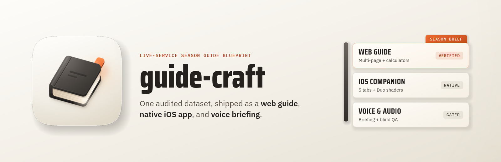
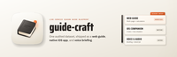
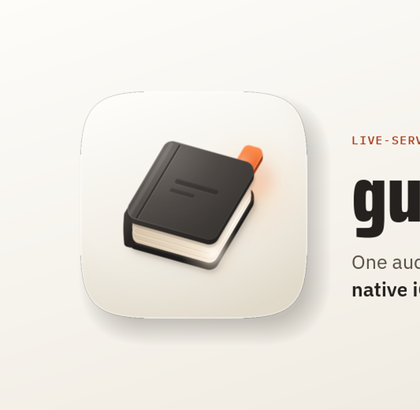

Every size a person actually meets this banner at, then the 12-point rubric. Delivery bar is 10 of 12 with checks 1, 2, 3, 7 and 12 non-negotiable. 5 of 5 mechanical checks and 7 of 7 visual checks pass across the 1600, 900, 400, 200 and lockup renders.



| # | Check | Verdict | Evidence |
|---|---|---|---|
| 1 | Exactly 3200x1040, from a 1600x520 layout at deviceScaleFactor 2 (non-negotiable) | pass | 3200x1040 |
| 2 | The plugin's real icon asset, referenced rather than redrawn (non-negotiable) | pass | 1 artwork reference inlined as a data URI, which is how a file:// render loads it at all |
| 3 | The wordmark is set in a linked web font, not a local system face (non-negotiable) | pass | loads IBM Plex Mono, IBM Plex Sans, Saira Condensed |
| 4 | Ground register agrees with the icon it sits beside | pass | Porcelain ramp (#FDFCF9 to #E7E1D5) and #C4B899 vignette match icon.png seamlessly in display-900.png and crop-lockup.png. |
| 5 | One warm accent, carried from the icon's own accent constant | pass | Single vermilion accent (#EC6A31/#C44D1B) on Season Brief tab pill, lifted to #A63812 for text legibility on porcelain. |
| 6 | Composition derived from the icon's build script, not eyeballed from a sibling | pass | Derived directly from build_icon.py constants: 162deg ground ramp, (+0.62,+0.78) shadow vector, spine rail and tab pill geometry. |
| 7 | One essence line, no em dash (non-negotiable) | pass | no em dash in the copy |
| 8 | Nothing overflows the frame | pass | render_banner.py reports overflow: [] and visual inspection shows >=90px breathing room on all four edges. |
| 9 | Wordmark and essence line both legible at 900px | pass | Inspected display-900.png: Saira Condensed 800 wordmark and balanced two-line IBM Plex Sans essence read crisply with zero orphan word. |
| 10 | Wordmark legible at 400px | pass | Inspected display-400.png: icon, wordmark, essence line, and three surface headings remain sharp; card sub-labels soften into secondary texture as noted in verdict. |
| 11 | No element illegibly overlapping another | pass | Three zones maintain >=44px horizontal clearance; neutral-warm tile and card shadows stay clean without clipping adjacent copy. |
| 12 | banner-src retained, so the banner stays editable (non-negotiable) | pass | banner-src.html |
12 / 12
Ship this banner (11 / 12). Ground ramp (`#FDFCF9` -> `#F3EFE7` -> `#E7E1D5` at `162deg`), corner vignette (`#C4B899` at `0.24`), directional shadows along `(+0.62, +0.78)`, and single vermilion accent (`#EC6A31`/`#C44D1B`, text lifted to `#A63812`) are derived directly from `assets/build_icon.py`. Real `icon.png` (576px retina source) sits left of a linked `Saira Condensed` 800 wordmark and balanced two-line `IBM Plex Sans` essence with zero em dashes and zero overflow at `3200x1040`. Known liability: at 400px catalogue-card width, the right-hand card sub-labels soften into secondary texture while the icon, wordmark, essence line, and three surface headings remain legible.